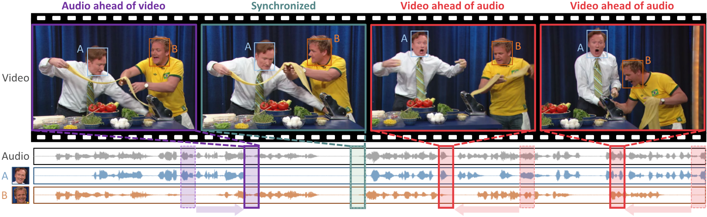
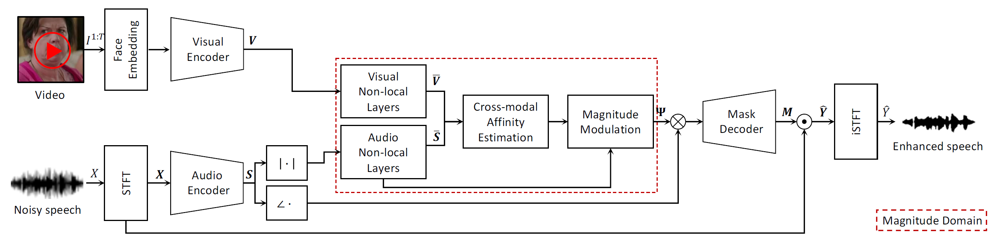

Authors
- Jiyoung Lee✲
- Soo-Whan Chung✲
- Sunok Kim
- Hong-Goo Kang♱
- Kwanghoon Sohn♱
✲ equal contribution
♱ co-corresponding authors
Abstract
The objective of this paper is to separate a target speaker's speech from a mixture of two speakers using a deep audio-visual speech separation network. Unlike previous works that used lip movement on video clips or pre-enrolled speaker information as an auxiliary conditional feature, we use a single face image of the target speaker. In this task, the conditional feature is obtained from facial appearance in cross-modal biometric task, where audio and visual identity representations are shared in latent space. Learnt identities from facial images enforce the network to isolate matched speakers and extract the voices from mixed speech. It solves the permutation problem caused by swapped channel outputs, frequently occurred in speech separation tasks. The proposed method is far more practical than video-based speech separation since user profile images are readily available on many platforms. Also, unlike speaker-aware separation methods, it is applicable on separation with unseen speakers who have never been enrolled before. We show strong qualitative and quantitative results on challenging real-world examples.
Framework

Overall network configuration: (1) encoding individual audio and visual features; (2) learning cross-modal affinity; (3) predicting spectrogram soft mask $\mathbf{M}$ to reconstruct target speech $\mathbf{\hat{Y}}$. Red dotted region means the magnitude operation processing.

Paper

|
J. Lee*, S.-W. Chung*, S. Kim, H.-G. Kang, K. Sohn Looking into Your Speech: Learning Cross-modal Affinity for Audio-visual Speech Separation [Paper] [Code] |
BibTeX
@inproceedings{lee2021looking,
title={Looking into Your Speech: Learning Cross-modal Affinity for Audio-visual Speech Separation},
author={Lee, Jiyoung and Chung, Soo-Whan and Kim, Sunok and Kang, Hong-Goo and Sohn, Kwanghoon},
booktitle={Proceedings of the IEEE/CVF Conference on Computer Vision and Pattern Recognition},
year={2021}
}
Acknowledgements
This work was supported by the National Research Foundation of Korea(NRF) grant funded by the Korea government(MSIT). (NRF-2021R1A2C2006703).
This research was supported by the Yonsei University Research Fund(Yonsei Signature Research Cluster Program).